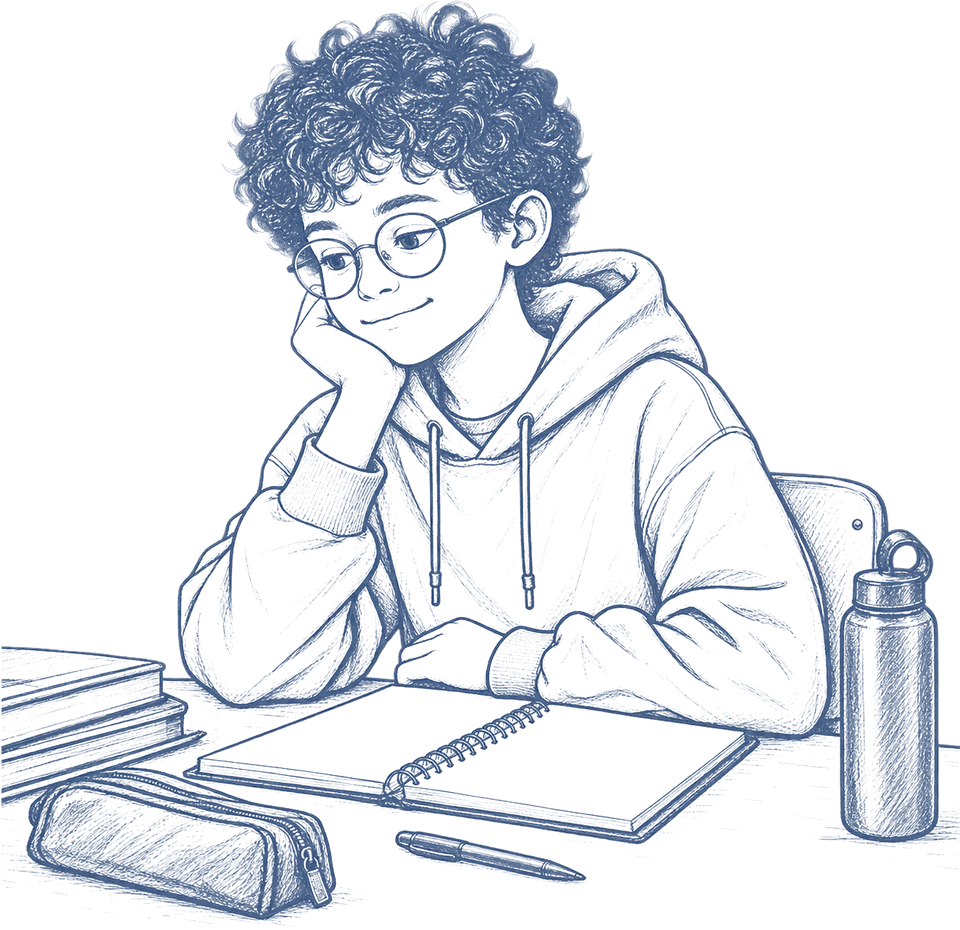
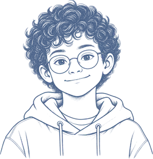
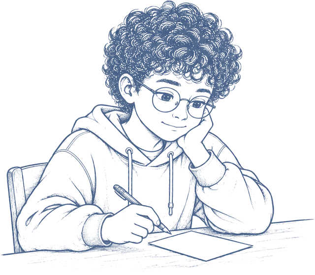
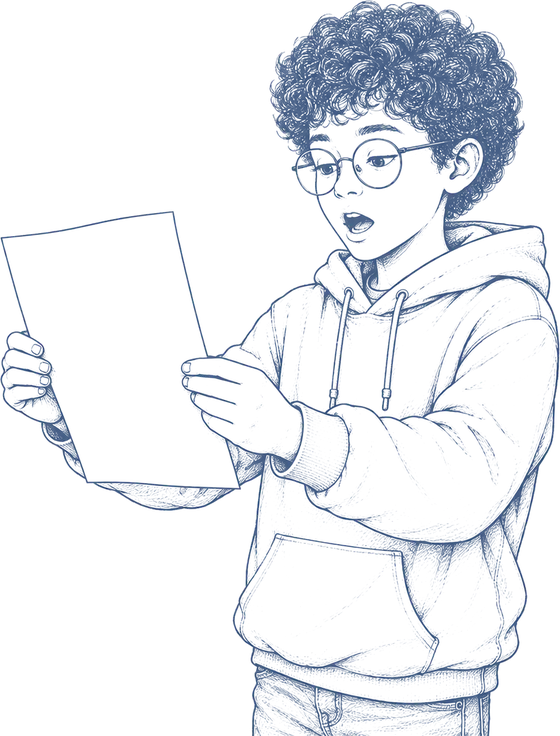
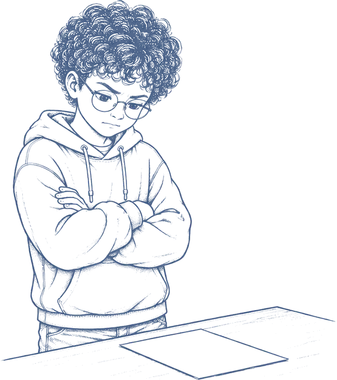

A pessoa que vai ler não estava com você. Não viu o que você viu, não sabe o nome do seu cachorro, não sabe se choveu. Ela só vai saber o que você escrever.
The person who reads it was not with you. They did not see what you saw, they do not know your dog's name, they do not know if it rained. They will only know what you write.

Falar some. Escrever fica.
Speaking disappears. Writing stays.
Quando você fala inglês na aula, a frase dura três segundos e acaba. Ninguém pode voltar e ouvir de novo. Quando você escreve, a frase fica lá, parada, esperando alguém ler. Isso assusta um pouco, mas é a melhor coisa que existe: é a única das quatro habilidades em que você pode mudar de ideia depois.
When you speak English in class, the sentence lasts three seconds and it is gone. Nobody can go back and hear it again. When you write, the sentence stays there, waiting for someone to read it. That is a bit scary, but it is the best thing about it: writing is the only one of the four skills where you can change your mind afterwards.
Escrever também é a mais lenta das quatro, e é de propósito. Falar é rápido demais para você reparar no que está fazendo. No papel dá tempo de ver a frase inteira, olhar para ela e perguntar: a pessoa que vai ler isto vai entender?
Writing is also the slowest of the four, and that is on purpose. Speaking is too fast for you to notice what you are doing. On paper you have time to see the whole sentence, look at it and ask: will the person reading this understand it?
E tem uma coisa que quase ninguém conta: quem escreve sobre o que leu entende melhor o que leu. Escrever não é só o fim da aula. É uma forma de pensar devagar.
And there is something almost nobody tells you: people who write about what they read understand what they read better. Writing is not just the end of the lesson. It is a way of thinking slowly.
Quem escreve neste guia
Who writes in this guide
Oi! Eu sou o Theo, tenho 11 anos e moro em Vargem Grande Paulista. Escrevo para a Nina, que mora na Irlanda e nunca me viu na vida.
Hi! I'm Theo, I'm 11 and I live in Vargem Grande Paulista. I write to Nina, who lives in Ireland and has never seen me.
Da primeira vez eu escrevi “we went there and it was fun”. A professora perguntou: fomos onde?
The first time I wrote “we went there and it was fun”. My teacher asked me: went where?
Agora eu já sei: ela não estava lá.
Now I know: she was not there.
Todos os textos das próximas páginas são dele, e nenhum saiu bom de primeira. O que você vê em cada modelo é o texto do Theo depois da segunda olhada, com as marcas do que mudou na margem. As marcas são o guia. O texto é dele.
Every text in the next pages is his, and none of them came out well the first time. What you see in each model is Theo's text after the second look, with the notes about what changed in the margin. The notes are the guide. The text is his.

Responda tudo o que foi pedido
Answer everything you were asked
Uma tarefa de escrita quase nunca pede uma coisa só. Ela pede três, e cada uma vale ponto separado. Dá para escrever um texto bonito e perder por ter respondido duas de três.
A writing task almost never asks for one thing. It asks for three, and each one is marked separately. You can write a good text and lose marks for answering two out of three.
Write about your favourite place.
Say where it is,
who you go there with
and why you like it.
Write 60 to 80 words.

Três pedidos, três notas.
Se faltar um, some a nota dele inteira.
Three things, three marks.
Leave one out and its marks go with it.
O plano cabe em duas linhas
The plan fits in two lines
Plano não é rascunho e não é frase pronta. São palavras soltas, em português se você quiser, só para fixar a ordem antes de a mão começar a andar.
A plan is not a draft and it is not finished sentences. It is loose words, in Portuguese if you like, just to lock the order before your hand starts moving.
Write about your favourite place. Say where it is, who you go there with and why you like it. Write 60 to 80 words.
Quarenta segundos de plano não deixam o texto mais bonito. Deixam você escrever mais dentro do mesmo tempo, porque você nunca para no meio para decidir o que vem depois.
Forty seconds of planning do not make the text prettier. They let you write more in the same time, because you never stop halfway to decide what comes next.

Doze textos, três decisões
Twelve texts, three decisions
São doze tipos de texto, e mais um que não é bem um texto. Parece muita coisa para decorar, mas não é: o que muda de um para o outro são só três coisas. O meio é quase igual em todos.
There are twelve kinds of text, and one more that is not really a text. It looks like a lot to memorise, but it is not: only three things change from one to the next. The middle is nearly the same in all of them.
Responda essas três antes de escrever a primeira palavra e o texto está resolvido. Abaixo, as três respostas de cada um.
Answer those three before you write the first word and the text is settled. Below, the three answers for each one.
Os modelos abaixo são curtos de propósito. Cada um mostra só os lugares onde o texto se decide: a primeira linha, uma virada no meio e a última linha. Um texto de verdade tem 60 a 80 palavras, com frases inteiras entre esses pontos.
The models below are short on purpose. Each one shows only the places where the text is decided: the first line, one turn in the middle and the last line. A real text runs 60 to 80 words, with full sentences between those points.
Tuesday 14th
Today we practised the show for three hours.
I forgot my line twice and I felt terrible.
Mr Costa said, “Everybody forgets.” Tomorrow I’m going to try again.
Hi Nina,
Thanks for the photos of your street. It is so different from mine.
You asked about my school. We start at seven, which everybody hates.
Do you have a long holiday in July? Write soon,
My grandmother’s kitchen is the smallest room in the house.
There is a blue table with one short leg, and a radio that only plays one station.
It smells of coffee in the morning and of soap at night.
It is small, tiny even, and it is where I do my homework.
The rain started when we were halfway up the hill.
Ana looked at me. “We can’t go back now,” she said.
We ran to a big tree and waited. After ten minutes, the sun came back.
The whole valley was green and wet, and I stopped being afraid of rain.
RAFA: You took my sandwich.
LUCA (looking at the floor): I took half.
RAFA: Half is the whole top part.
LUCA: Then I owe you the bottom part of mine.
The river does not walk.
It runs, it turns, it waits.
In the summer it is small and quiet.
In the winter it takes the road with it.
A boy finds a hurt bird and hides it in his room.
His mother finds out and they take it to a vet.
The bird gets better and flies away.
He goes back to the park every week to look for it.
Five Minutes That Save a Tree
Do you know how much paper our class uses every week?
We counted for five days. The answer is 400 sheets. Now we use both sides and it is 210.
Try it in your class and tell me what happens.
Your bike is always wet.
The Roof Rack keeps it dry for six months.
Easy to build. Two people, one hour.
Ask Ms Prado at reception.
Why don’t we put a box for lost pens next to the door?
At the moment, pens end up in the bin.
We could use an old shoebox, so it would cost nothing.
Could you ask Ms Prado on Monday?
People do not agree about zoos.
Some people think zoos protect animals that are in danger.
Other people think animals are not happy in small spaces.
I think good zoos help, but they need bigger spaces.
Purpose. This report is about the school bus.
Findings. The bus arrives at 7:10. Fourteen of thirty students arrive late.
Findings. Nine of those fourteen live on the same street.
Recommendation. The bus should stop on Rua das Flores.
bees → 1/3 of our food
no bees = no apples, no coffee
why fewer? spray + no wild flowers
Brazil 2nd biggest honey ?? check
Rascunho não é a versão feia
A draft is not the ugly version
Quase todo mundo trata o rascunho como uma primeira tentativa que já tem que sair boa, e por isso trava na primeira frase. O rascunho serve para pôr as ideias na ordem, não para escrevê-las bem. A versão bonita é a segunda.
Almost everyone treats the draft as a first attempt that has to come out good already, which is why they freeze on the first sentence. A draft is for getting the ideas in order, not for writing them well. The good-looking version is the second one.
São cinco ferramentas, e as cinco vêm do seu livro.
There are five tools, and all five come from your book.
- Um parágrafo, uma ideia. Se o parágrafo tem duas, ele não tem nenhuma clara. Ideia nova, linha nova.One paragraph, one idea. If a paragraph has two, it has neither of them clearly. New idea, new line.
- Palavra repetida, troca por outra. big vira huge, nice vira friendly. Não é enfeite: é para o leitor não tropeçar na mesma palavra três vezes.A repeated word gets swapped. big becomes huge, nice becomes friendly. It is not decoration: it stops the reader tripping over the same word three times.
- Quando alguém fala, use aspas. “I'm not going,” she said. É mais curto e mais rápido de ler do que she said that she was not going.When someone speaks, use quotation marks. “I'm not going,” she said. It is shorter and faster to read than she said that she was not going.
- Uma expressão de tempo em cada virada. After lunch, The next day, Ten minutes later. Sem elas a história fica parada no mesmo lugar.One time expression at each turn. After lunch, The next day, Ten minutes later. Without them the story stays in the same place.
- Palavra que você não sabe, deixe em português e circule. Volta nela depois. Parar para procurar mata o rascunho.A word you do not know, leave it in Portuguese and circle it. Come back to it later. Stopping to look it up kills the draft.
No rascunho você não corrige. Escrever e corrigir ao mesmo tempo é a razão número um de a folha ficar em branco por dez minutos.
You do not correct while drafting. Writing and correcting at the same time is the number one reason the page stays empty for ten minutes.
Leia em voz alta
Read it out loud
Você já revisa. O problema é que quase todo mundo revisa a coisa errada: uma letra, um acento, um ponto. Isso é a última coisa a olhar, não a primeira.
You already revise. The problem is that almost everyone revises the wrong thing: a letter, an accent, a full stop. That is the last thing to look at, not the first.
E existe um jeito de achar os problemas de verdade sem saber nenhuma regra: ler o próprio texto em voz alta, devagar, até o fim.
And there is a way to find the real problems without knowing a single rule: read your own text out loud, slowly, to the end.
- Onde você respira, provavelmente falta um ponto.Where you breathe, a full stop is probably missing.
- Onde você travou, o leitor trava também. Não é culpa dele.Where you stumbled, the reader stumbles too. It is not their fault.
- Frase que você não consegue ler sem voltar é frase que precisa virar duas.A sentence you cannot read without going back is a sentence that needs to become two.
Antes de olhar a ortografia:Before you look at spelling:
A ortografia é a última.Spelling comes last.

A frase que não diz nada
The sentence that says nothing
É a mais comum das três e a mais fácil de achar depois que você sabe procurar. Compare a abertura do rascunho do Theo com a mesma abertura depois de cortada.
It is the commonest of the three and the easiest to spot once you know what to look for. Compare the opening of Theo's draft with the same opening after cutting.
I think that my favourite place in the world is a place that I really like a lot and it is the beach in Peruíbe.
My favourite place is the beach in Peruíbe.
Texto comprido não é texto bom
A long text is not a good text
Esse é o engano mais caro da escrita. Encher linha para chegar na contagem de palavras não deixa o texto melhor, e quem corrige percebe na primeira leitura. A faixa de palavras existe para dizer o tamanho do problema, não para ser preenchida.
This is the costliest mistake in writing. Padding to reach the word count does not make the text better, and the marker spots it on the first read. The word range exists to tell you the size of the problem, not to be filled.
- Conte os pedidos antes de entregar. Aponte no seu texto onde cada um foi respondido. Se você não achar, quem corrige também não acha.Count the things before you hand it in. Point to where each one is answered in your text. If you cannot find it, the marker will not either.
- Corte antes de acrescentar. Se está faltando palavra para a faixa, quase sempre falta conteúdo, não enfeite.Cut before you add. If you are short of words, what is missing is almost always content, not decoration.
- Use as palavras da unidade, mas só onde encaixam. Palavra enfiada à força não conta ponto, e dá para perceber na hora.Use the unit's words, but only where they fit. A word forced in earns nothing, and it shows immediately.
- Guarde três minutos para ler em voz alta. Não é tempo que sobra, é parte da tarefa. Sem eles, você entrega o rascunho.Keep three minutes to read it out loud. It is not spare time, it is part of the task. Without it, you hand in the draft.
Antes de entregar eu conto os pedidos no dedo.
Já achei um faltando duas vezes.
Before I hand it in I count the things on my fingers.
Twice I have found one missing.
Das quatro habilidades, escrever é a única que continua servindo depois da prova. Ninguém vai te pedir para circular uma palavra num texto quando você for grande. Vão te pedir um recado que se explique sozinho.
Of the four skills, writing is the only one that keeps working after the test. Nobody will ask you to circle a word in a text when you grow up. They will ask you for a message that explains itself.

O texto chegou lá
The text got there
Este é o texto do Theo depois de tudo: o comando lido duas vezes, o plano de duas linhas, o rascunho riscado, a segunda olhada. Sessenta e oito palavras.
This is Theo's text after all of it: the task read twice, the two-line plan, the crossed-out draft, the second look. Sixty-eight words.
My favourite place is the beach in Peruíbe. I go there with my grandad. We get up at five o'clock, when there is nobody on the sand. He teaches me to fish and I am still bad at it. Last summer I caught one, and it was smaller than my hand. The air smells of salt and old boats. It is cold, but I like it there.
Ela nunca viu aquela praia. Está vendo pelo texto dele.
She has never seen that beach. She is seeing it through his text.
- DeFrom
- Nina <nina.d@post.ie>
- ParaTo
- Theo
- AssuntoSubject
- Re: my favourite place
Now I can see it. Five in the morning, nobody on the sand, your grandad, and a fish smaller than your hand.
It rained here every single day this week. Send me another one.
Nina
Ela não estava lá. Agora está.
She was not there. Now she is.
Os tipos de texto vêm das colunas Communication Skills, Reading e CLIL and Literacy do Scope & Sequence de Learning Well 5 e 6, sem separação por nível.
The text types come from the Communication Skills, Reading and CLIL and Literacy columns of the Learning Well 5 and 6 Scope & Sequence, with no split by level.
Escrever e compreender leitura: Graham e Hebert (2010), Graham e Perin (2007). Ganho de fluência com planejamento: Ellis e Yuan (2004), Johnson e Abdi Tabari (2023). Revisão de superfície: Faigley e Witte (1981).
Writing and reading comprehension: Graham and Hebert (2010), Graham and Perin (2007). Fluency gains from planning: Ellis and Yuan (2004), Johnson and Abdi Tabari (2023). Surface revision: Faigley and Witte (1981).